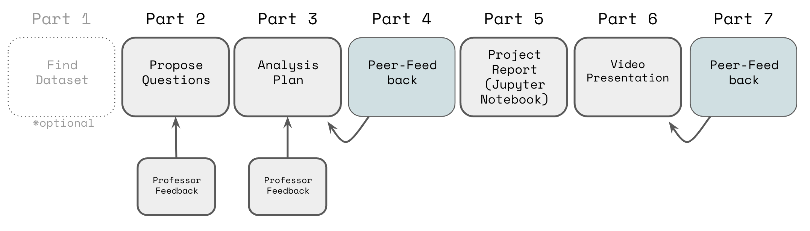

Final Project (100 points)
📣NOTE: You have the option of proposing your own project to Dr. Parlett as long as it uses Python, and Machine Learning Techniques related to or covered in the course.
📣 PLEASE READ ALL THE DIRECTIONS BEFORE STARTING THE PROJECT, INCLUDING THE GROUP OPTION/CHECKLIST IF WORKING IN A GROUP.

Part #1 (Optional; Do Not Need to Turn In)
Find a data set that’s interesting to you. Make sure it has at least 7 variables and at least 100 rows, and at least 4 continuous/interval columns. But the more the better. You may NOT use any of the datasets we’ve used in class (see here for reference).
Some places to find data:
- data.gov
- kaggle.com/datasets
- OSF (where scientists post their data)
- your own data! (e.g. fitbit, data from a video game you play, etc…)
- https://github.com/BuzzFeedNews
- http://archive.ics.uci.edu/ml/index.php
- https://www.quandl.com/search
- http://academictorrents.com/browse.php
- your favorite sports teams!
- baseball data
- Fast Food and Food Data
- Data from your job/internship
- Scrape twitter data
- Tidy Tuesday Data
- fivethirtyeight
- League of Legends
Part 2
(10 points; PDF) Pretend you’re a company who is interested in the dataset you chose. Come up with at least 7 questions that you want to answer based on the variables (at the top of this document, provide a short description of each of the variables in the model). Use THIS FORMAT.
These questions can be about the relationships between variables, or how well one thing can predict another, clustering…etc, but note that in your final project you must use at least:
- 1 supervised learning model (includes both regression and classification models)
- 1 clustering/reccomendation model (DBSCAN, HAC, K-Means, Gaussian Mixtures, or NearestNeighbors), and
- 1 instance of dimensionality reduction (PCA or LASSO)
so keep that in mind when creating questions. You can use more than one of these for a single question (e.g. using PCA and then doing linear regression on the components).
You will be graded on the quality of the questions. Questions should be interesting and complex (e.g. questions like “is this model more than 90% accurate?” should be expanded to something like “is this model accurate as measured by accuracy, examination of patterns in the confusion matrix and/or consistent accuracy across gender/race/income/education groups?”). Questions related to the same model/analysis should be included as 1 question (for example, if you build a model predicting cat weight from cat height, cat age, and cat diet, the question should be somthing like “which variables have the strongest impact on cat weight?” instead of having three separate questions “what is the impact of cat height on cat weight?”, “what is the impact of cat age on cat weight?”, and ““what is the impact of cat diet on cat weight?”)
(10 points; PDF) Pretend you’re a company who is interested in the dataset you chose. Come up with at 5 questions per person that you want to answer based on the variables (at the top of this document, provide a short description of each of the variables in the model). Use THIS FORMAT.
These questions can be about the relationships between variables, or how well one thing can predict another, clustering…etc, but note that in your final project you must use at least:
- 1 supervised learning model (includes both regression and classification models)
- 1 clustering/reccomendation model (DBSCAN, HAC, K-Means, Gaussian Mixtures, or NearestNeighbors), and
- 1 instance of dimensionality reduction (PCA or LASSO)
so keep that in mind when creating questions. You can use more than one of these for a single question (e.g. using PCA and then doing linear regression on the components).
You will be graded on the quality of the questions. Questions should be interesting and complex (e.g. questions like “is this model more than 90% accurate?” should be expanded to something like “is this model accurate as measured by accuracy, examination of patterns in the confusion matrix and/or consistent accuracy across gender/race/income/education groups?”). Questions related to the same model/analysis should be included as 1 question (for example, if you build a model predicting cat weight from cat height, cat age, and cat diet, the question should be somthing like “which variables have the strongest impact on cat weight?” instead of having three separate questions “what is the impact of cat height on cat weight?”, “what is the impact of cat age on cat weight?”, and ““what is the impact of cat diet on cat weight?”)
Part 3
PLEASE NOTE THAT LATE DAYS CANNOT BE USED DURING FINALS WEEK OR WHEN THEY PREVENT YOUR PEERS FROM DOING PEER REVIEW ON TIME.
(27 points; PDF) Now put on your data scientist hat. Write an ORGANIZED analysis plan to answer 3 of the questions you came up with. Think about which of the questions need a predictive model, which need a clustering model, which need dimensionality reduction, and which maybe need just visualizations/summaries. (at the top of this document, provide a short description of each of the variables in the model)
YOU MUST USE at least:
- 1 supervised learning model
- 1 clustering/reccomendation model (DBSCAN, HAC, K-Means, Gaussian Mixtures, or NearestNeighbors), and
- 1 instance of dimensionality reduction. Dimensionality reduction includes LASSO and PCA.
(two or more of these could be used to answer the same question).
Each Question needs TWO ggplots to go with it. Please read the instructions for section 5 so you know what your analysis will need to include.
Write up this plan as if you’re submitting it to a company to tell them what you’re planning to do. CLEARLY mark where each part is and answer each part separately using THIS FORMAT.
(27 points; PDF) Now put on your data scientist hat. Write an ORGANIZED analysis plan to answer 2 questions per person of the questions you came up with. Think about which of the questions need a predictive model, which need a clustering model, which need dimensionality reduction, and which maybe need just visualizations/summaries. (at the top of this document, provide a short description of each of the variables in the model)
YOU MUST USE at least:
- 1 supervised learning model
- 1 clustering/reccomendation model (DBSCAN, HAC, K-Means, Gaussian Mixtures, or NearestNeighbors), and
- 1 instance of dimensionality reduction. Dimensionality reduction includes LASSO and PCA.
(two or more of these could be used to answer the same question).
Each Question needs TWO ggplots to go with it. Please read the instructions for section 5 so you know what your analysis will need to include.
Write up this plan as if you’re submitting it to a company to tell them what you’re planning to do. CLEARLY mark where each part is and answer each part separately using THIS FORMAT.
Part 4
Peer review + write a critique of two person/group’s plan (~ 1 page, double spaced). You should answer:
- what does this plan do well?
- what could be improved (give specifics) and why?
- what are some (perhaps unavoidable) limitations of the data/analysis plan?
To get credit, you must submit a comment (or link a document) with your feedback, AND fill out the Rubric.
Part 5
PLEASE NOTE THAT LATE DAYS CANNOT BE USED DURING FINALS WEEK OR WHEN THEY PREVENT YOUR PEERS FROM DOING PEER REVIEW ON TIME.
(38 points; PDF + PDF of Jupyter Notebook) Perform the planned analyses for your 3 questions , make the graphs in a python notebook, and write a technical report using Quarto or Google Docs Template. For each of your 3 questions make sure you have:
- the analysis code (py or ipynb)
- a well labeled PDF report (using this Google Doc Template with explicit answer to the question with detailed responses of how you came to this answer and the answer’s importance. This should be targeted at an audience that are NOT familiar with Data Science (e.g. pretend you’re presenting these results to shareholders/your boss), but should include enough detail to understand why the analysis supports the question.
- the PDF report should also have two ggplot data visualizations + captions (graphs will be graded on how efficient and clear they are, so make sure you make good aesthetic choices that help emphasize your message).
(be sure to note in the report if there were any changes to your analysis plan since part #3 and why)
Answers should be clear, concise, and complete. You will be graded on your code, the clarity of your responses, and the correctness of your methods. In your code, you must clearly label each question and the analyses that apply to it using Markdown Cells.Don’t forget to turn in a README with this part.
(38 points; PDF + PDF of Jupyter Notebook) Perform the planned analyses for your questions , make the graphs in a python notebook, and write a technical report using Quarto or Google Docs Template. For each of your questions (2 per group member) make sure you have:
- the analysis code (py or ipynb).
- a well labeled PDF report (using this Google Doc Template with explicit answer to the question with detailed responses of how you came to this answer and the answer’s importance. This should be targeted at an audience that are NOT familiar with Data Science (e.g. pretend you’re presenting these results to shareholders/your boss), but should include enough detail to understand why the analysis supports the question.
- the PDF report should also have two ggplot data visualizations + captions (graphs will be graded on how efficient and clear they are, so make sure you make good aesthetic choices that help emphasize your message).
(be sure to note in the report if there were any changes to your analysis plan since part #3 and why)
Answers should be clear, concise, and complete. You will be graded on your code, the clarity of your responses, and the correctness of your methods. In your code, you must clearly label each question and the analyses that apply to it using Markdown Cells.Don’t forget to turn in a README with this part which should INCLUDE a statement from your group about what each person did.
Part 6
📣 PEOPLE IN GROUPS SHOULD EACH MAKE A SEPARATE VIDEO, YOU CAN SPLIT UP YOUR QUESTIONS/INFO HOWEVER YOU WANT BETWEEN GROUP MEMBERS.
📣 GROUP MEMBERS SHOULD EACH MAKE THEIR OWN VIDEO/PRESENTATION (each 5-9 minutes).
(8 points; Video link) Prepare a short presentation of the results (powerpoint, prezi, keynote…etc, DO NOT just scroll through your notebook.). Make a short (5-9 minute, not under or over) video presentation explaining what you found. Upload it to youtube or similar site (you can put your video as Unlisted if you don’t want anyone else to see). It is expected that you are the one presenting your results.
I recommend OBS Streamlabs or Zoom if you want to record your screen (with the presentation/data) and yourself presenting at one time. Or get someone to film you presenting it on a screen (or if needed print our your slides and hold them up!). Or if you’re on a Mac you can use QuickTime to record your screen while you present.
Part 7
(12 points; During Finals Week) Watch other students’ video presentations, fill out the feedback form Dr. Parlett gives you.
Checklists
To review, throughout the project you’ll need to submit:
- the name/a link to the data set you’re planning to use (you don’t have to do this, but it saves you time/effort, in case your dataset won’t work out)
- A PDF or text submission with your questions.
- A PDF with your analysis plan.
- A text submission or PDF on Canvas with your critique of another students plan.
- A py/ipynb of your python code and a PDF Report. Please get rid of extra analyses/code that you did not end up using. You must clearly indicate where each question is being answered. Also include a README.
- A link to a short video presentation (do not send the video directly).
- A Feedback Form given to you by Dr. Parlett.
Group Option
Groups are optional (you may work alone) but if you choose to work in a group, READ THE MODIFICATIONS below, and know that working in a group is agreeing to 1) follow these modifications and 2) be graded together with your group members (you will not receive separate grades except for completing the peer review).
If you’d like to work in a group (up to 3) then:
- You must tell me your group members and their sections by via SLACK or Email before your Questions (Part I #2) are due.
- (🧑🤝🧑 Together) For Part I, #2 You need to come up with 5 questions per member.
- (🧑🤝🧑 Together)For Part I, #3 You should come up with the plan together and EACH submit a copy of the same plan. You need to answer 2 questions per member (so a group of 2 would need to answer 4 questions, a group of 3 would need to answer 6).
- (Separate) For Part I, #4 You should write your critiques separately.
- (🧑🤝🧑 Together) For Part II, #5 You should work on it together. Again, you need to answer 2 questions per member (so a group of 2 would need to answer 4 questions, a group of 3 would need to answer 6). You must ALSO submit a joined statement (as a PDF) describing what each member did.
- (Separate) For Part II, #6 You each need to make your OWN video presenting on 2 of the questions each, however you can collaborate on the presentation materials (the slides..etc). Each of you should submit a separate video.
- (Separate) For Part II #7 You need to each do separate peer reviews.
Group Option Checklist
To review, throughout the project you’ll need to submit:
- the name/a link to the data set you’re planning to use (you don’t have to do this, but it saves you time/effort, in case your dataset won’t work out), and the names and section #s of who is in your group (you do need to do this)
- A PDF or text submission with your questions.
- A PDF with your analysis plan.
- A text submission or PDF on Canvas with your critique of another students plan (EACH group member will review a separate students/group).
- A py/ipynb of your python notebooks and a PDF Report. Please get rid of extra analyses/code that you did not end up using. You must clearly indicate where each question is being answered using Titles in Markdown. Also include a README, and joint statement of who did what.
- A link to a short video presentation (do not send the video directly). Each group member does their own video.
- A Feedback Form given to you by Dr. Parlett. Each group member will review separate students/groups.